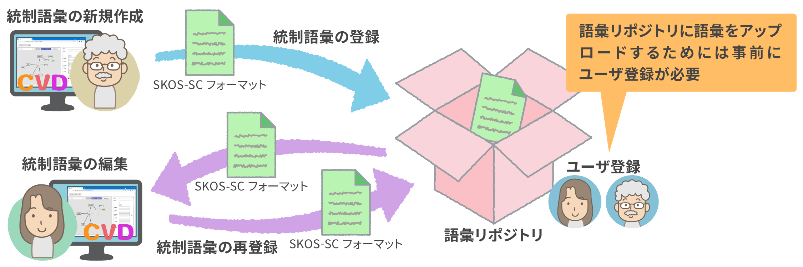
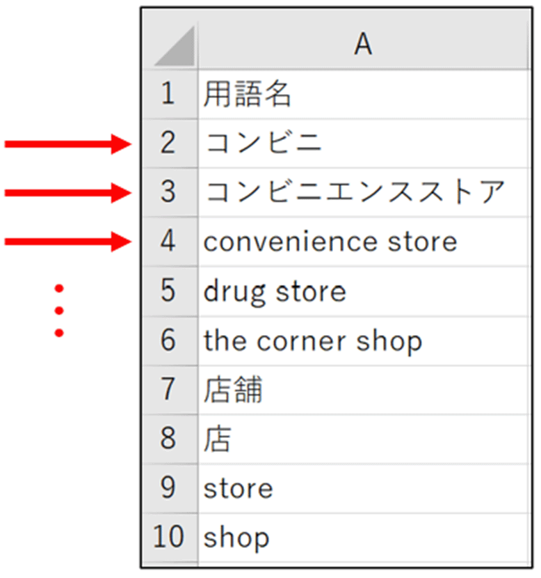
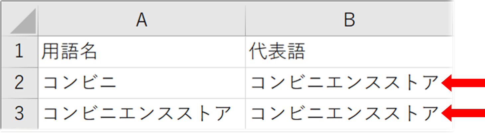
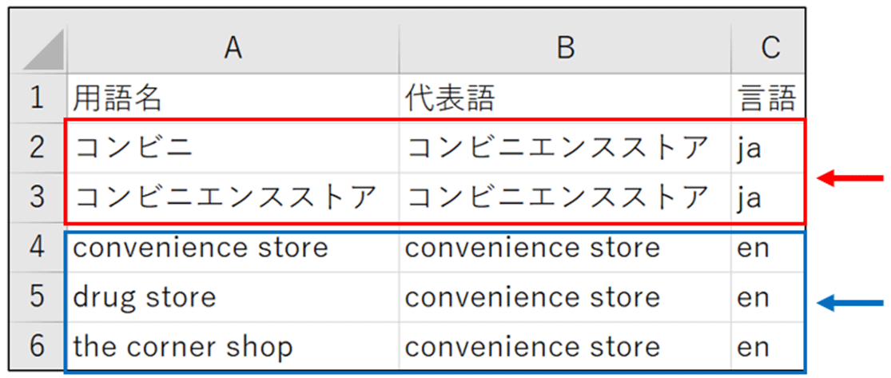
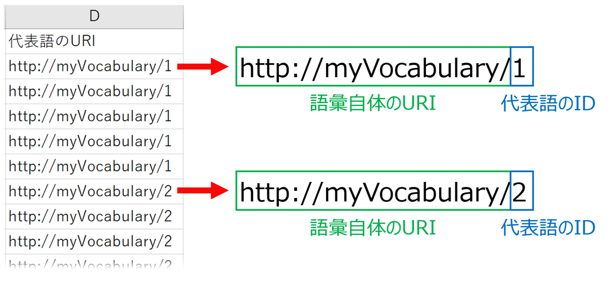
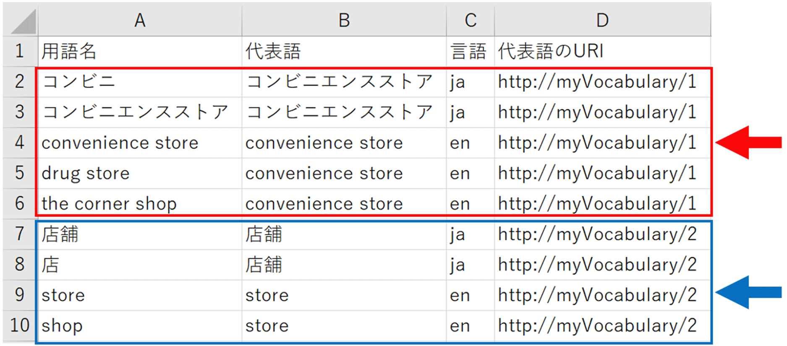
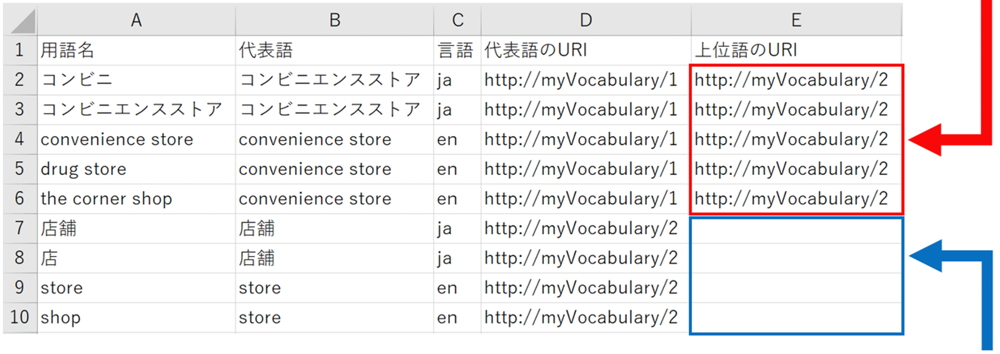
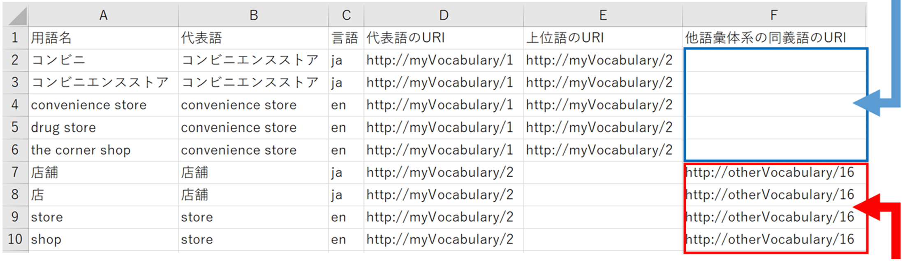
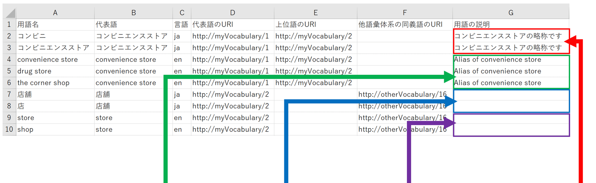
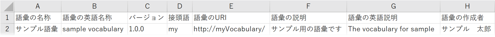

This repository (a storage place where data, files and other items are managed centrally) is used to build vocabularies and allows the user to register, search and view vocabularies freely.
▼Conceptual image of SKOS-SC format integration between CVD and vocabulary repository
Controlled vocabularies can also be created and edited without using CVD, by editing files in the SKOS-SC format on Excel.
The following explanation is supplementary information about how to edit files in the SKOS-SC format by using Excel.
One term is entered in each row with no duplicates
Enter a term in each row with no duplicate

Representative word (代表語) Column
Term that represents its synonyms in the target field, if any, for display purposes
In an example of entries in the simplified file format, “convenience store (コンビニエンスストア)” is the representative word of
both “conbini (コンビニ)” and “convenience store (コンビニエンスストア).”
This expresses that “conbini (コンビニ)” and “convenience store (コンビニエンスストア)” are synonyms
and their representative word is “convenience store (コンビニエンスストア).”

If there are terms in a synonymous relationship, the same representative word is entered repeatedly as in this case
One representative word is selected from the terms in each synonymous relationship and entered.
In this example, either “conbini (コンビニ)” or “convenience store (コンビニエンスストア)” should be entered
as their representative word and no other term should be entered.
If a term has no synonym, the term itself is selected as the representative word and entered in the Representative word (代表語) Column.
Language (言語) Column
Information about the language used in the target field
When the terms are in Japanese, “ja” is entered. When they are in English, “en” is entered (other languages are not supported).
Terms in each synonymous relationship should have a uniform representative word by language

“convenience store (コンビニエンスストア)” is the representative word in “ja”
“convenience store” is the representative word in “en”
URI of representative word (代表語のURI) Column
Unique value held by each representative word of terms in the target field
It is expressed in the combination of the URI of that vocabulary and the ID of the representative word (the ID does not have to be a number)
* The URI of each vocabulary is the same as the URI of the vocabulary in the “basic vocabulary information.”

There is no particular restriction on how to express the URI of each vocabulary
and the ID of each representative word (however, a slash should be entered between the URI of the vocabulary and the ID of the representative word)
URI must be entered for each representative word
The same URI is entered for all of the representative words in each synonymous relationship

The following terms are synonyms:
conbini (コンビニ)
convenience store (コンビニエンスストア)
convenience store
drug store
the corner shop
The following terms are synonyms:
store (店舗)
shop (店)
store
shop
[Supplementary information] About URI
URI is an abbreviation for “Uniform Resource Identifier,” which is a character string described according
to a certain format and an identifier used to recognize any kind of resource.
URI of hypernym (上位語のURI) Column
URI of the representative word for each hypernym of terms in the target field
The same “URI of hypernym (上位語のURI)” is entered for the terms in each synonymous relationship
It is entered only if a hypernym exists (and can be omitted)
Terms such as “store (店舗)” with http://myVocabulary/2 as the URI of their representative word
are hypernyms of terms such as “conbini (コンビニ)” with http://myVocabulary/1 as the URI of their representative word
There is no entry, because terms such as “store (店舗)” with http://myVocabulary/2 as the URI of their representative word have no particular hypernym

URI of synonym in other vocabulary systems (他語彙体系の同義語のURI) Column
URI of a term that has a synonymous relationship with each term in a vocabulary that is different from the vocabulary in the target field
The same “URI of synonym in other vocabulary systems (他語彙体系の同義語のURI)” is entered for all of the terms in each synonymous relationship
It is entered only if there is any term in a synonymous relationship in another vocabulary (and can be omitted)
The “URI of synonym in other vocabulary systems (他語彙体系の同義語のURI)” of terms such as
“store (店舗)” with http://myVocabulary/2 as the URI of their representative word is
http://otherVocabulary/16 (and there is no available information other than this URI)
There is no entry, because terms such as “conbini (コンビニ)” with http://myVocabulary/2 as
the URI of their representative word have no synonym in other vocabulary systems

Term description (用語の説明) Column
Description of each term in the target field
The same term description is entered for the terms in each synonymous relationship by language
It can be omitted

Description of synonyms such as
“convenience store,” “drug
store” and “the corner shop”
There is no description of synonyms such as “store (店舗)” and “shop (店)”
There is no description of synonyms such as “store” and “shop”
Description of synonyms such as “conbini (コンビニ)” and “convenience store (コンビニエンスストア)”
About “Basic Vocabulary Information”
▼Example of entries in “basic vocabulary information”

Explanation of each column
Vocabulary name (語彙の名称) Column
Japanese name of each controlled vocabulary
Any name is entered
English name of vocabulary (語彙の英語名称) Column
English name of the controlled vocabulary
Any name is entered
Version (バージョン) Column
Version of the controlled vocabulary
Prefix (接頭語) Column
Expression by simplifying the URI of the controlled vocabulary
As a prefix may be used to describe the controlled vocabulary in RDF, it can be simplified without using a long URI character string repeatedly
URI of vocabulary (語彙のURI) Column
URI of the controlled vocabulary
It can be expressed freely
It must be entered
Vocabulary description (語彙の説明) Column
Description of the controlled vocabulary in Japanese
The controlled vocabulary is described here
English description of vocabulary (語彙の英語説明) Column
Description of the controlled vocabulary in English